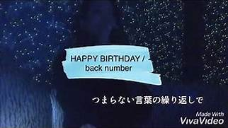
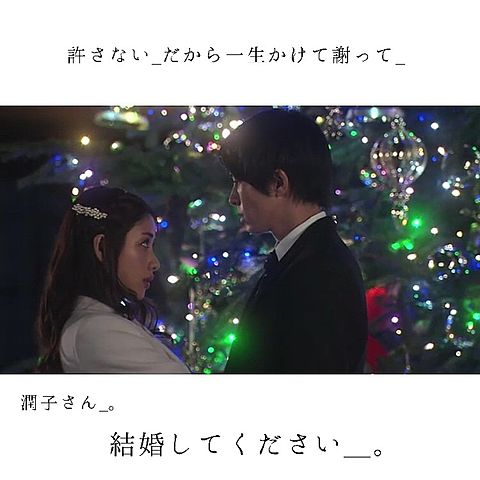

back number紹介

皆さん、こんにちは。back numberが大好きないとしょーです。このサイトでは、今や大人気なback numberのバンドと曲を紹介します。これまで、いろいろなドラマの主題歌やCMソングを担当してきた『back number』について紹介していきます。『back number』は、2004年に結成された日本の三人組ロックバンドです。耳になじみやすいメロディーと切ないがストレートな歌詞が話題を呼び10代～20代の男性、女性を中心に支持されてます。また、『back number』の名前の由来は、交際中の女性をバンドマンにとられた。振られた自分は彼女にとってback number（型遅れ）だから として清水依与吏さんがback numberと命名。僕はこの名前の由来もとても大好きです。切ない歌詞と切ない歌声がたまらないです。男性であるにもかかわらず、女性目線の切ない歌詞で作曲してしまいます。
ガチファンが選ぶ名曲ぞろいのback numberおすすめ個人的ランキング
人気曲TOP5とそのほかおすすめな曲
ランキング第1位 「HAPPY BIRTHDAY」 はじ恋の主題歌
第一位に降臨したのはback numberの「HAPPY BIRTHDAY」です。この曲は2019年1月期に放送されたドラマ「初めて恋をした日に読む話」の主題歌に起用されました。 誕生日の日に好きな女性に恋焦がれる想いを歌っている曲です。初めて恋をした日に読む話もみましたが、横浜流星くんと深田 恭子さんこと深キョンの組み合わせ最高すぎました。 ドラマにもこの曲があっていて、ドラマの最後エンディングで流れるときも絶妙で涙案件です。清水依与吏さんのセンスを改めて感じます。歌詞の『君のいない場所は空気が薄くてさ』や『何かの手違いで好きになってくれないかな』は共感の大嵐です。自動車学校で流れていて大好きになりました。一番好きな曲です。なかなか想いを素直に伝えられない片思いのもどかしさが描かれている楽曲で、切ないのに、なんだか温かい。クリスマスには毎年必ず聞いちゃいます。まあ僕はクリスマス以外も年中きいちゃいますけど！今、この曲がアラームで朝この曲をきいて起きます。
ランキング第2位 「クリスマスソング」/冬に欠かせない定番ラブソング
第二位は定番である「クリスマスソング」です。この曲は、月9の「五時から九時まで私に恋したお坊さん」の主題歌でした。私も学生の頃、よく見てました。僕がback numberにはまったきっかけでもあります。一月にカラオケに行ったとき、カラオケランキングで1位に輝いていて驚きました（笑）切ない歌詞と切ないメロディーで多くの人を魅了しました。back numberが一番認知された曲でもあります。歌詞の『君が好きだ』とストレートにすきを表現するところ大好きです。当時中学生のころ恋をしていたのですごい心にささりました。
ランキング第3位 「アイラブユー」/最近の新曲にして神曲
この曲はNHK連続テレビ小説「舞いあがれ」朝ドラで起用されました。ほんとに大好きになりました。時には喧嘩したり、二人で大きな困難に遭遇したりすることもあるでしょう。 それでもそんな道のりも時間も、いつかは花束にして君に渡したい。素敵すぎる歌詞です。
ランキング第4位 高嶺の花子さん
夏に大盛り上がり間違いなしの一曲です。この曲は、ボーカルの清水依与吏さんの「頭の中で繰り広げられる妄想の恋愛」を歌った一風変わった曲となっていて、一見すると、片思いのピュアな曲に思えますが、実はなかなか妄想がすぎるヤバイ曲(笑) 男性は共感してしまうのではないでしょうか。また、なかなか恋にいけない女々しい男性が好きな女性にも人気なようです。高校生のころ、よく聞いていたのでその情景が思い浮かびます。曲調はとてもリズミカルでテンション高めなのに女々しい歌詞が絶妙です。
ランキング第5位 ヒロイン
これまた冬に聞きたい曲です。この曲は、2015年に放送されたCM「JR東日本 SKISKI」シリーズのCMソングに採用された曲。「冬の片思い」を歌った曲になっており、なかなか素直になれない気持ちと、微妙な心の揺れ動きを歌っています。僕自身の学生時代の恋を思い出します。（笑）やっぱり雪を見てきれいだって笑うのは君がいいです。（笑）
そのほか、オールドファッションや恋、光の街、雨と僕の話などたくさん名曲も多いです。